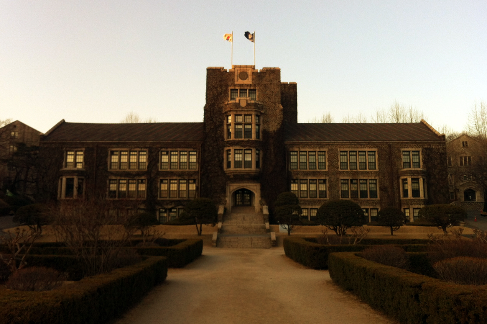

South Korea's 6-3-3-4 Education System
From early childhood Nuri kindergarten to world-renowned SKY research universities, South Korea's unified single-track system ensures merit-based progression, mandatory high quality, and 98%+ completion rates.
The 6-3-3-4 Ladder of Opportunity
A Single-Track Ladder From Kindergarten to University
South Korea operates a unified 6-3-3-4 single-track educational structure designed to guarantee equal opportunity and high quality for every student, regardless of socio-economic background.
Interactive Stage Explorer
Click each tab to switch stagesThe 'SKY' Universities & Top STEM Institutes
In South Korea, admission to the prestigious 'SKY' universities carries extraordinary societal prestige, unlocking premier leadership roles in government, Chaebols (Samsung, Hyundai, LG), and academia.
Seoul National University
Gwanak-gu, Seoul | National Flagship
Korea's #1 premier national flagship university founded in 1946. Renowned globally for medicine, law, engineering, and state governance.
Korea University
Seongbuk-gu, Seoul | Private University
Founded in 1905, Korea University is celebrated for its historic humanities, law school, business administration, and intense collegiate sports rivalry with Yonsei.

Yonsei University
Seodaemun-gu, Seoul | Private University
Founded in 1885, Yonsei is famed for Severance Medical Center, Underwood International College, business management, and vibrant global exchange programs.